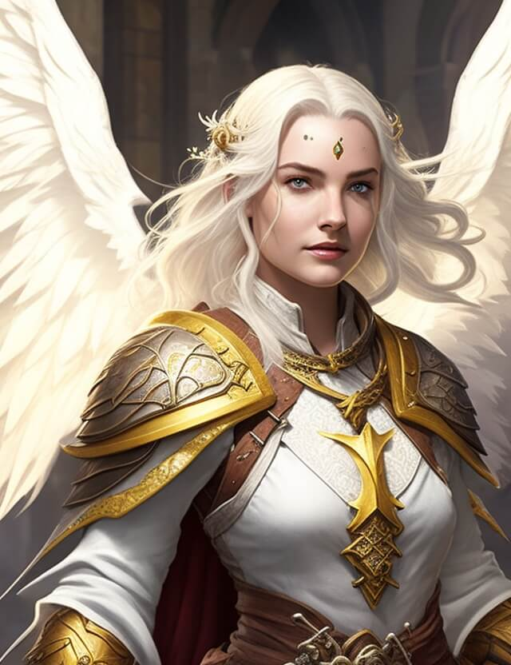
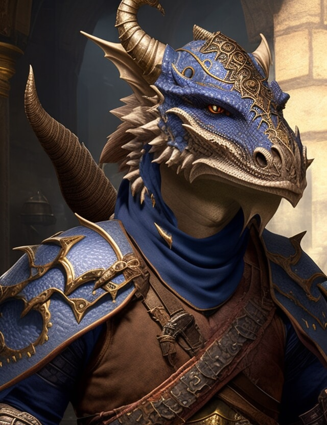
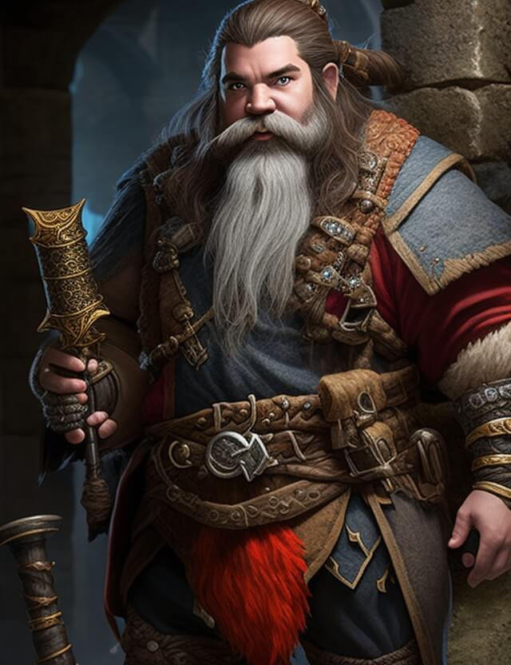
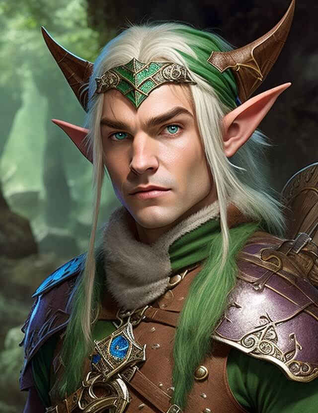
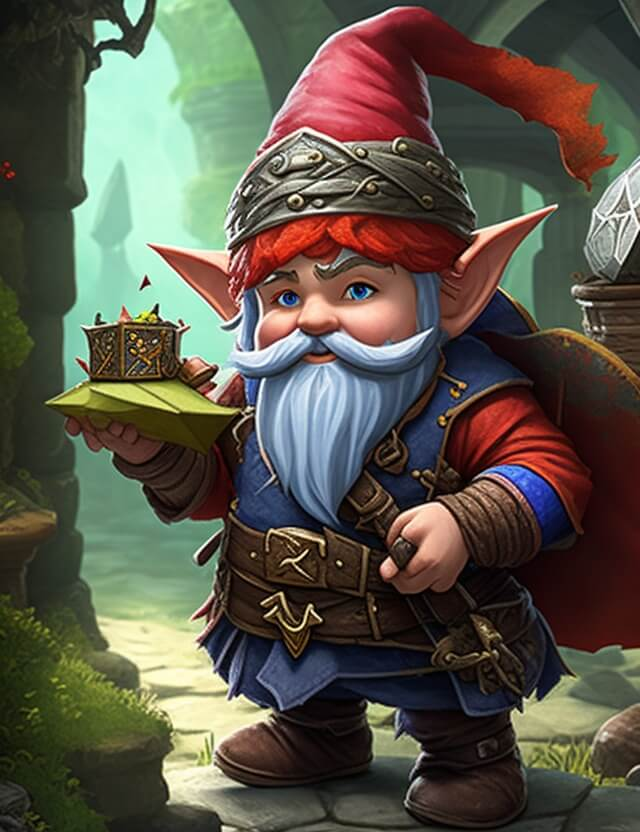
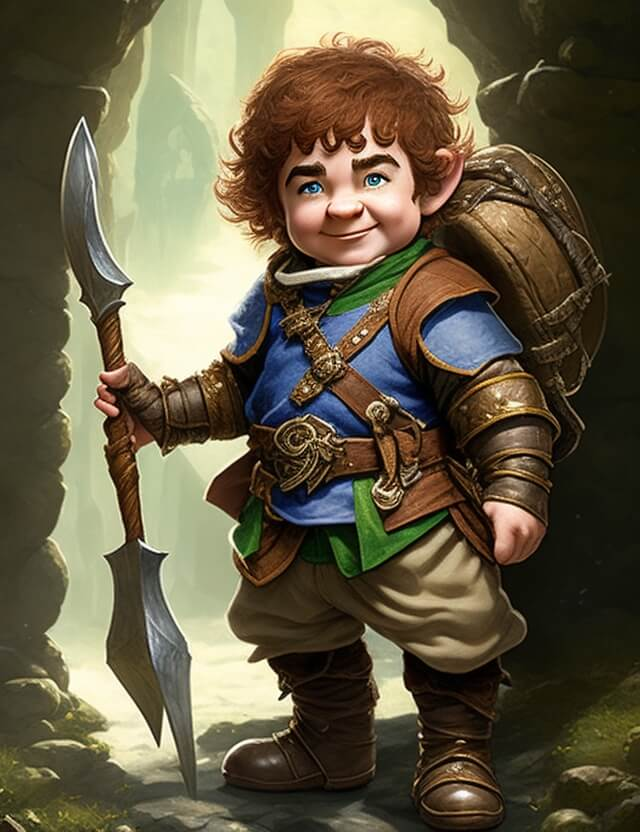
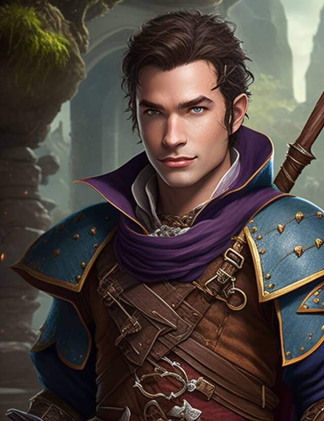
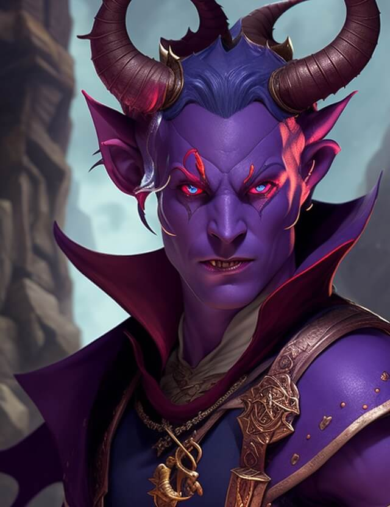

Character Creation
Making a character that you love is a major part of Dungeons and Dragons. On this page, I will walk you through the general steps for making your own character. I have tailored options to my setting of Aeriloth, but know that there are a ton of other character creation options, just check with your dungeon master on what they allow before bringing in your own options.
Get Your Character Sheet
To start making your character, you will need a place to store all of your character information. You can download the standard 5th Edition Dungeons and Dragons character sheet from Wizards of the Coast here. Whether you want to print a physical copy of this or just edit it digitally is up to you. There are also many other tools you can use to hold your character information such as DNDBeyond, several virtual tabletops such as Roll20, and many other digital apps.
Choose Your Character's Race
Every character has a race, one of the many intelligent peoples of the world of Aeriloth. The most common races in this world are dwarves, elves, humans, and halflings, but there are many other races in this world (and maybe more if you are not playing in Aeriloth, but I have tailored the list here to the ones present in my world). Choose one of the races listed here and write the race name and relevant race information on your character sheet.
Aarakocra
Bipedal, humanoid birds with the ability to fly
Traits: Size - Medium, Flight, Talons, Speed - 25 ft walking or 50 ft flying

Aasimar
Divine humanoids, believed to be blessed by the gods
Traits: Size - Medium, Darkvision, Celestial Resistance, Celestial Legacy, Speed - 30 ft walking
Dragonborn
Humanoid dragons with the ability to breathe elemental energy
Traits: Size - Medium, Draconic Ancestry, Breath Weapon, Damage Resistance, Speed - 30 ft walking
Dwarf
A hardworking people who have carved citadels into the earth
Traits: Size - Medium, Darkvision, Dwarven Resilience, Dwarven Combat Training, Tool Proficiency, Stonecunning, Speed - 25 ft. walking
Elf
A magical people who possess knowledge of the old ways of magic
Traits: Size - Medium, Darkvision, Keen Senses, Fey Ancestry, Trance, Speed - 30 ft. walking
Gnome
Short innovators who have made names for themselves in the field of technology
Traits: Size - Small, Darkvision, Gnome Cunning, Speed - 25 ft. walking
Halfling
Short, homy people who have established peaceful residences in both the skies and on the surface
Traits: Size - Small, Lucky, Brave, Halfling Nimbleness, Speed - 25 ft. walking
Human
Hardy people who make up the bulk of people in the world
Traits: Size - Medium, Skilled, Feat, Speed - 30 ft. walking
Tiefling
Born of devils, these humoids face a lot of prejudice in the world
Traits: Size - Medium, Darkvision, Hellish Resistance, Infernal Legacy, Speed - 30 ft. walking
Choose Your Character's Class
Every adventurer has a class describing their skills and special talents and the tactics they employ while out adventuring. Keep in mind that in the world of Aeriloth, lowfolk who possess magic are hunted and so they must keep their magic hidden. You can still choose magical characters, but this may influence who your character is. Choose from the classes and write it on your character sheet.
Barbarian
A fierce warrior who can enter into a battle rage.
Main stats should be Constitution and Strength.
Bard
An inspiring magician whose power echoes the music of creation
Main stat should be Charisma.
Cleric
A priestly champion who wields divine magic in service of a higher power.
Main stat should be Wisdom.
Druid
A priest of the Old Faith, wielding the powers of nature and adopting animal forms.
Main stat should be Wisdom.
Fighter
A master of martial combat, skilled with a variety of weapons and armor.
Main stats should be Strength and Dexterity.
Monk
A master of martial arts, harnessing the power of the body in pursuit of physical and spiritual perfection.
Main stats should be Dexterity and Wisdom.
Paladin
A holy warrior bound to a sacred oath.
Main stats should be Strength and Charisma
Ranger
A ranger who combats threats on the edges of civilization.
Main stats should be Strength and Dexterity.
Rogue
A scoundrel who uses stealth and trickery to overcome obstacles and enemies.
Main stat should be Dexterity.
Sorcerer
A spellcaster who draws on inherent magic from a gift or bloodling.
Main stat should be Charisma.
Warlock
A wielder of magic that is derived from a bargain with an extraplanar entity.
Main stat should be Charisma.
Wizard
A scholarly magic-user capable of manipulating the structures of reality.
Main stat should be Intelligence.
Determine Your Ability Scores
Much of what your character does in the game is determined by their six abilities: Strength, Dexterity, Constitution, Intelligence, Wisdom, and Charisma. Each ability has a score that you will write on your character sheet. You will also write an ability modifier next to each score that you will use to modify your dice rolls when you are playing the game. The abilities are defined as: Strength: Measures natural athleticism and bodily power Dexterity: Measures physical agility, reflexes, balance, and poise Constitution: Measures health, stamina, and vital force Intelligence: Measures mental acuity, information recall, and analytical thinking Wisdom: Measures awareness, intuition, and insight Charisma: Measures confidence, eloquence, and leadership There are many different ways to generate your ability scores. We will be using the standard array method in my campaign, but check with your dungeon master if you are not playing with me to determine the best way for you to generate your stats. Keep in mind that the class section above recommends what you make your best stats be. An ability score is a number between 1 and 20 that shows how good your character is with that ability. The higher the number, the better they are. The standard array we will be using are the numbers 15, 14, 13, 12, 10, 8. Determine which of these numbers you would like to occupy each of your abilities, using each number once. As a bonus, you also get to determine one ability that you will increase by an additional 2 points and another ability that you will increase by 1 point. Write your final ability score number in each of the labeled spots on your character sheet.
Determine Your Ability Score Modifiers
Your ability score modifiers are what you will use to modify your dice rolls over the course of a game. This number is determined based on your ability score that you just calculated in the last step. Use the following table to determine your ability modifier for each ability and write it in the space next to each ability score. Score - Modifier 1 - -5 2-3 - -4 4-5 - -3 6-7 - -2 8-9 - -1 10-11 - 0 12-13 - +1 14-15 - +2 16-17 - +3 18-19 - +4 20 - +5
Describe Your Character
Now that you know the basic game mechanics of your character, it’s time to get creative in fleshing out the finer details of your character. Come up with a good name for your character, as well as what you want them to look like. Come up with a short history of your character’s life up to this point. What moments in their life really shaped them into the person they are now? In Aeriloth, the sky is literally the limit, so get creative in making your character unique. Reach out to me if you would like help or need more information about the world for your character.
Choose Your Starting Equipment
Your character’s class determines a lot of the equipment that they start with; however this is all customizable to make the character that you truly want to play. Look through the guidelines for what your class gives you and if you would like to change anything, reach out to me and we can work it all out. Write your equipment in the equipment section of your character sheet. You now have a fully functional character sheet to play with me in the world of Aeriloth. As you play your character, you will grow and learn new things, so you will be constantly adding and taking away things from your sheet. Good luck to you in playing and I hope you have fun!